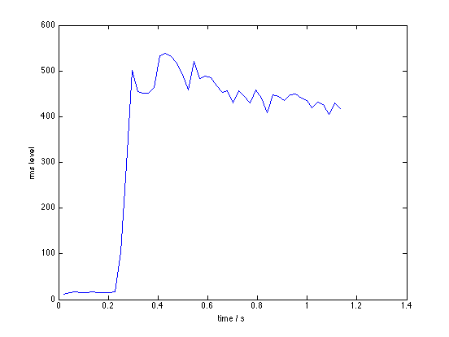

Popen access from Matlab
popen() -- for "pipe open" -- is a very useful system call provided in many flavors of Unix. It runs a command passed in as a string then returns a file handle so that the parent process can read or write to the process as if it was a file; data passed this way is connected to the standard input or the standard output of the child process.
I created this because I wanted to process very long MP3 files in Matlab. Originally I wrote mp3read to allow me to decode just a small section of a long MP3 file without having to decode the whole thing, but every time I wanted to read another segment, I had to open the file again, then seek through to the point I wanted to read.
Instead, by using popen to open an MP3 decoding process that writes to standard output, I can "pull" as many frames as I want from the file, then put the process to sleep while I deal with those frames, then, on my next read from popen, the process is reawoken and the next block of data can be accessed. But this could be used for any application where there are long data streams to read or write, and you want to handle them a bit at a time.
For simplicity, there are two Matlab extensions provided:
P = popenr(CMD) runs the string CMD in a unix shell returning a handle in P. Subsequent calls to X = popenr(P, N [, F]) reads N values from the pipe P, converting each value according to the optional format string F (which defaults to 'char', but can be 'int16' etc.). A final call of popen(P, -1) closes the pipe and destroys the handle.
P = popenw(CMD) is for writing to a process. Called with the command line string CMD, it initializes the pipe and returns the pipe handle in P. N = popenw(P, D[, F]) then writes the data in vector D to the process (using the format conversion in F), returning the number of items written, and popen(P, []) closes the pipe.
I don't have any provision for both reading and writing to the same process, unfortunately - popenr and popenw have separate handle tables, so the handles aren't interchangable. Something for the future (a unified popen extension that takes an access mode as an argument).
Contents
Code
The popen functions are provided as MEX extensions to Matlab. Each function is distributed as a single C source file. Below is an example code snippet where I use popenr to read the long MP3 file one bit at a time. For an example of using popenw to write a long MP3 file, see my mp3write function on the mp3read / mp3write page. http://labrosa.ee.columbia.edu/matlab/mp3read.html
% Compile the MEX function (you only need to do this once): mex popenr.c % Setup constants for example nframes = 50; sampsperframe = 1000; FS = 44100; downsamp = 2; filename = 'piano.mp3'; % Set up the mpeg audio decode command as a readable stream cmd = ['/usr/bin/mpg123 -q -s -m -',num2str(downsamp),' ',filename]; p = popenr(cmd); if p < 0 error(['Error running popenr(',cmd,')']); end % Pull values one chunk at a time, for incremental processing % without having to load the entire file into memory for frame = 1:nframes if rem(frame,10) == 0 disp([filename,' is processing .. : ',num2str(frame),... [' out of '],num2str(nframes),' frames']); end % Get the next chunk of data from the process Y = popenr(p,[sampsperframe/downsamp,1],'int16'); Sr = FS/downsamp; % Process the block of samples in Y E(frame) = norm(Y)/sqrt(length(Y)); % ... or whatever end % Close pipe popenr(p,-1); % Plot results (to have a graphic!) plot([1:nframes]*(sampsperframe/FS),E); xlabel('time / s'); ylabel('rms level');
piano.mp3 is processing .. : 10 out of 50 frames piano.mp3 is processing .. : 20 out of 50 frames piano.mp3 is processing .. : 30 out of 50 frames piano.mp3 is processing .. : 40 out of 50 frames piano.mp3 is processing .. : 50 out of 50 frames
Precompiled MEX files
There are precompiled mex files available for some Unix flavors at: http://labrosa.ee.columbia.edu/matlab/popenrw.html
Windows
As far as I know, popen() is not available under Windows. If you know different, and you get these extensions working under Windows, I would be very interested to hear about it, and post the results here.
Acknowledgments
Thanks to Scott Leishman of U Toronto for his modifications.
Last updated: $Date: 2007/01/14 04:12:56 $ Dan Ellis dpwe@ee.columbia.edu